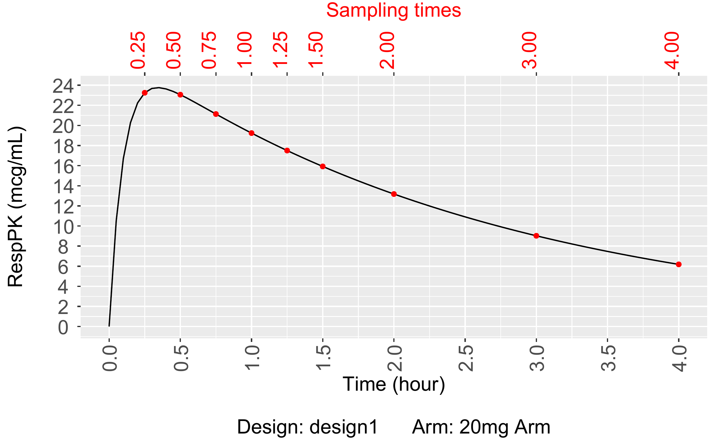
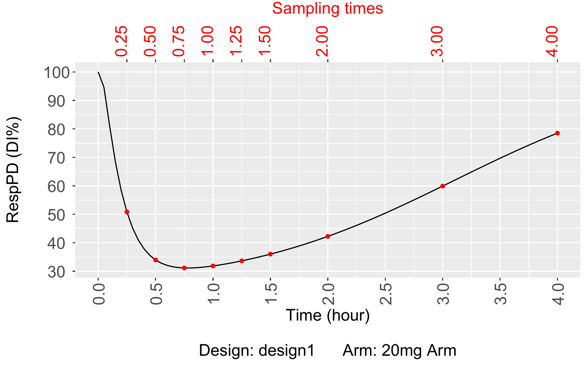
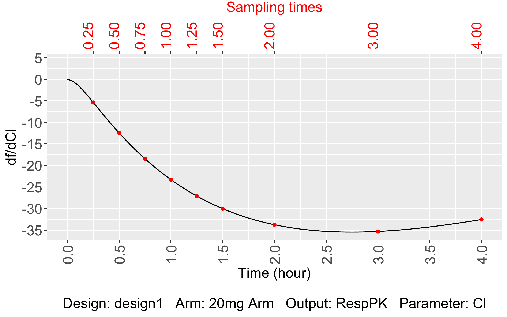
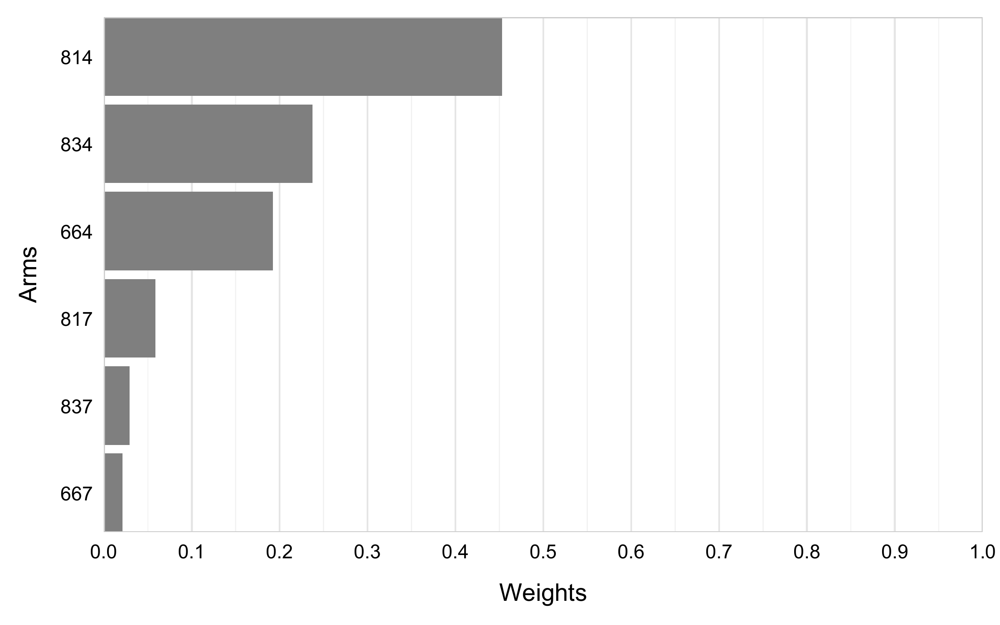

Scientific Background
This example is based on a landmark PK/PD population study of Tolmetin (a non-steroidal anti-inflammatory drug) in rats (Flores-Murrieta et al. 1998). The integrated model couples a one-compartment PK model with a indirect response PD model.
Original experimental design. Six parallel groups of rats ( per group) received single oral doses from 1 to 100 mg/kg. Blood samples and inflammation scores (DI) were collected at 10 time points: 0, 0.25, 0.5, 0.75, 1, 1.25, 1.5, 2, 3, and 4 h.
Objectives:
- Evaluation – Compute the Population and Bayesian Fisher Information Matrices (FIM) for the original design. Assess parameter precision via RSE% and Shrinkage.
- Optimization – Find the D-optimal design for 30 rats by selecting doses and sampling times from a discrete candidate set. Two algorithms are compared: Fedorov-Wynn and Multiplicative.
Design Evaluation
Model Equations
PK model: one-compartment, first-order oral absorption
| Symbol | Description | Unit |
|---|---|---|
| Plasma drug concentration (state variable) | mcg/mL | |
| Volume of distribution | L | |
| First-order absorption rate constant | h | |
| Total clearance | L/h | |
Administered dose (dose_RespPK) |
mg |
PD model: indirect response, inhibition of production
| Symbol | Description | Unit |
|---|---|---|
| Inflammation score (state variable) | – | |
| Baseline production rate | h | |
| Maximum fractional inhibition () | – | |
| Concentration at 50% of | mcg/mL | |
| Hill coefficient | – | |
| First-order elimination rate of the effect | h |
Steady-state initial condition. At (i.e. ), the PD system is at equilibrium: .
Naming conventions for ODE models:
- The prefix
Deriv_is mandatory; the suffix must match the state variable name (CcorE). - The dose is specified as
dose_followed by the name of the PK response (e.g.dose_RespPK). - Use
**for exponentiation. - Model outcomes are represented as a list associating each response
with its state variable:
RespPKCc,RespPDE.
modelEquations = list(
Deriv_Cc = "dose_RespPK/V*ka*exp(-ka*t) - Cl/V*Cc",
Deriv_E = "Rin*(1-Imax*(Cc**gamma)/(Cc**gamma + IC50**gamma)) - kout*E"
)Model Parameters
Parameters are specified via their population typical value (fixed effect ) and inter-individual variability (IIV ). PFIM assumes a log-normal distribution for all parameters.
The estimable parameter vector has dimension (6 fixed effects + 6 variance components):
Setting fixedMu = TRUE excludes the fixed effect from
the FIM. Setting omega = 0 implies no IIV; the
corresponding variance is not estimated (fixedOmega = TRUE
is set automatically).
| Parameter | Description | Fixed | Fixed | ||
|---|---|---|---|---|---|
| Volume of distribution (L) | 0.74 | 0.316 | No | No | |
| Total clearance (L/h) | 0.28 | 0.456 | No | No | |
| Absorption rate constant (h) | 10 | 0 | Yes | Yes | |
| Effect elimination rate (h) | 6.14 | 0.947 | No | No | |
| Baseline production rate (h) | 614 | 0 | Yes | Yes | |
| Maximum inhibition (–) | 0.76 | 0.439 | No | No | |
| Potency (mcg/mL) | 9.22 | 0.452 | No | No | |
| Hill coefficient (–) | 2.77 | 1.761 | No | No |
modelParameters = list(
ModelParameter(name = "V",
distribution = LogNormal(mu = 0.74, omega = 0.316)),
ModelParameter(name = "Cl",
distribution = LogNormal(mu = 0.28, omega = 0.456)),
ModelParameter(name = "ka",
distribution = LogNormal(mu = 10, omega = 0),
fixedMu = TRUE),
ModelParameter(name = "kout",
distribution = LogNormal(mu = 6.14, omega = 0.947)),
ModelParameter(name = "Rin",
distribution = LogNormal(mu = 614, omega = 0),
fixedMu = TRUE),
ModelParameter(name = "Imax",
distribution = LogNormal(mu = 0.76, omega = 0.439)),
ModelParameter(name = "IC50",
distribution = LogNormal(mu = 9.22, omega = 0.452)),
ModelParameter(name = "gamma",
distribution = LogNormal(mu = 2.77, omega = 1.761))
)Residual Error Models
Two residual error structures are used, one per response.
| Response | Error model | ||
|---|---|---|---|
| PK | Combined1 |
0.0 | 0.21 |
| PD | Constant |
9.6 | – |
Sampling Times
samplingTimesRespPK = SamplingTimes(
outcome = "RespPK",
samplings = c(0.25, 0.5, 0.75, 1, 1.25, 1.5, 2, 3, 4)
)
samplingTimesRespPD = SamplingTimes(
outcome = "RespPD",
samplings = c(0.25, 0.5, 0.75, 1, 1.25, 1.5, 2, 3, 4)
)Arms
Six arms correspond to the original dose levels converted to absolute doses for a 200 g rat: . Total: 36 subjects (6 arms x 6 subjects each).
| Arm | mg/kg | Absolute dose | Subjects |
|---|---|---|---|
| 1 | 1.0 | 0.20 mg | 6 |
| 2 | 3.2 | 0.64 mg | 6 |
| 3 | 10.0 | 2.00 mg | 6 |
| 4 | 31.6 | 6.32 mg | 6 |
| 5 | 56.2 | 11.24 mg | 6 |
| 6 | 100.0 | 20.00 mg | 6 |
Initial conditions: and
# Helper to avoid repeating the Arm() constructor six times
makeArm = function(armName, dose, size = 6) {
admin = Administration(outcome = "RespPK", timeDose = 0, dose = dose)
Arm(
name = armName,
size = size,
administrations = list(admin),
samplingTimes = list(samplingTimesRespPK, samplingTimesRespPD),
initialCondition = list(Cc = 0, E = 100)
)
}
arm1 = makeArm("0.20mg Arm", 0.20)
arm2 = makeArm("0.64mg Arm", 0.64)
arm3 = makeArm("2.00mg Arm", 2.00)
arm4 = makeArm("6.32mg Arm", 6.32)
arm5 = makeArm("11.24mg Arm", 11.24)
arm6 = makeArm("20.00mg Arm", 20.00)Evaluation of the population and Bayesian FIM
Population FIM Evaluation
evaluationPop = Evaluation(
name = "evaluationPop",
modelEquations = modelEquations,
modelParameters = modelParameters,
modelError = modelError,
outputs = list("RespPK" = "Cc", "RespPD" = "E"),
designs = list(design1),
fimType = "population",
odeSolverParameters = list(atol = 1e-8, rtol = 1e-8)
)
evaluationPopResults = run (evaluationPop )Bayesian FIM Evaluation
evaluationBayesian = Evaluation(
name = "evaluationBayesian",
modelEquations = modelEquations,
modelParameters = modelParameters,
modelError = modelError,
outputs = list("RespPK" = "Cc", "RespPD" = "E"),
designs = list(design1),
fimType = "Bayesian",
odeSolverParameters = list(atol = 1e-8, rtol = 1e-8)
)
evaluationBayesianResults = run( evaluationBayesian )Results
Population FIM
show(evaluationPopResults)
***************************************
Population Fisher Matrix
***************************************
μ_V μ_Cl μ_kout μ_Imax μ_IC50 μ_gamma ω²_V ω²_Cl
μ_V 583.89694102 9.19036099 -0.02315464 -3.35612090 0.32079096 -0.24507445 0.000000e+00 0.000000e+00
μ_Cl 9.19036099 2110.23408215 -0.01715815 -0.03198433 0.52533166 0.35319017 0.000000e+00 0.000000e+00
μ_kout -0.02315464 -0.01715815 1.04306085 0.63336569 -0.03141002 -0.04209541 0.000000e+00 0.000000e+00
μ_Imax -3.35612090 -0.03198433 0.63336569 60.63827631 -2.70317529 1.54206818 0.000000e+00 0.000000e+00
μ_IC50 0.32079096 0.52533166 -0.03141002 -2.70317529 0.65184243 0.07044445 0.000000e+00 0.000000e+00
μ_gamma -0.24507445 0.35319017 -0.04209541 1.54206818 0.07044445 0.74226627 0.000000e+00 0.000000e+00
ω²_V 0.00000000 0.00000000 0.00000000 0.00000000 0.00000000 0.00000000 1.419936e+03 5.071130e-02
ω²_Cl 0.00000000 0.00000000 0.00000000 0.00000000 0.00000000 0.00000000 5.071130e-02 3.801555e+02
ω²_kout 0.00000000 0.00000000 0.00000000 0.00000000 0.00000000 0.00000000 5.312959e-04 9.340249e-05
ω²_Imax 0.00000000 0.00000000 0.00000000 0.00000000 0.00000000 0.00000000 1.741930e-01 3.376237e-03
ω²_IC50 0.00000000 0.00000000 0.00000000 0.00000000 0.00000000 0.00000000 4.767726e-01 1.153787e-01
ω²_gamma 0.00000000 0.00000000 0.00000000 0.00000000 0.00000000 0.00000000 1.121281e-02 2.156350e-03
σ_slope_RespPK 0.00000000 0.00000000 0.00000000 0.00000000 0.00000000 0.00000000 1.694963e+02 3.442924e+01
σ_inter_RespPD 0.00000000 0.00000000 0.00000000 0.00000000 0.00000000 0.00000000 2.248402e-02 4.590882e-03
ω²_kout ω²_Imax ω²_IC50 ω²_gamma σ_slope_RespPK σ_inter_RespPD
μ_V 0.000000e+00 0.000000000 0.0000000 0.00000000 0.000000e+00 0.000000000
μ_Cl 0.000000e+00 0.000000000 0.0000000 0.00000000 0.000000e+00 0.000000000
μ_kout 0.000000e+00 0.000000000 0.0000000 0.00000000 0.000000e+00 0.000000000
μ_Imax 0.000000e+00 0.000000000 0.0000000 0.00000000 0.000000e+00 0.000000000
μ_IC50 0.000000e+00 0.000000000 0.0000000 0.00000000 0.000000e+00 0.000000000
μ_gamma 0.000000e+00 0.000000000 0.0000000 0.00000000 0.000000e+00 0.000000000
ω²_V 5.312959e-04 0.174193007 0.4767726 0.01121281 1.694963e+02 0.022484025
ω²_Cl 9.340249e-05 0.003376237 0.1153787 0.00215635 3.442924e+01 0.004590882
ω²_kout 2.149292e+01 0.386744465 0.1693550 0.01150713 8.462700e-03 0.050138553
ω²_Imax 3.867445e-01 41.669312017 16.1932689 0.55767351 1.413532e+00 0.818888973
ω²_IC50 1.693550e-01 16.193268935 83.8259799 0.15388072 8.155428e+00 1.229640291
ω²_gamma 1.150713e-02 0.557673507 0.1538807 0.69850714 1.549203e-01 0.107175844
σ_slope_RespPK 8.462700e-03 1.413531724 8.1554276 0.15492032 1.146177e+04 0.328767259
σ_inter_RespPD 5.013855e-02 0.818888973 1.2296403 0.10717584 3.287673e-01 5.297969806
***************************************
Fixed effects
***************************************
μ_V μ_Cl μ_kout μ_Imax μ_IC50 μ_gamma
μ_V 583.89694102 9.19036099 -0.02315464 -3.35612090 0.32079096 -0.24507445
μ_Cl 9.19036099 2110.23408215 -0.01715815 -0.03198433 0.52533166 0.35319017
μ_kout -0.02315464 -0.01715815 1.04306085 0.63336569 -0.03141002 -0.04209541
μ_Imax -3.35612090 -0.03198433 0.63336569 60.63827631 -2.70317529 1.54206818
μ_IC50 0.32079096 0.52533166 -0.03141002 -2.70317529 0.65184243 0.07044445
μ_gamma -0.24507445 0.35319017 -0.04209541 1.54206818 0.07044445 0.74226627
***************************************
Variance components
***************************************
ω²_V ω²_Cl ω²_kout ω²_Imax ω²_IC50 ω²_gamma σ_slope_RespPK σ_inter_RespPD
ω²_V 1.419936e+03 5.071130e-02 5.312959e-04 0.174193007 0.4767726 0.01121281 1.694963e+02 0.022484025
ω²_Cl 5.071130e-02 3.801555e+02 9.340249e-05 0.003376237 0.1153787 0.00215635 3.442924e+01 0.004590882
ω²_kout 5.312959e-04 9.340249e-05 2.149292e+01 0.386744465 0.1693550 0.01150713 8.462700e-03 0.050138553
ω²_Imax 1.741930e-01 3.376237e-03 3.867445e-01 41.669312017 16.1932689 0.55767351 1.413532e+00 0.818888973
ω²_IC50 4.767726e-01 1.153787e-01 1.693550e-01 16.193268935 83.8259799 0.15388072 8.155428e+00 1.229640291
ω²_gamma 1.121281e-02 2.156350e-03 1.150713e-02 0.557673507 0.1538807 0.69850714 1.549203e-01 0.107175844
σ_slope_RespPK 1.694963e+02 3.442924e+01 8.462700e-03 1.413531724 8.1554276 0.15492032 1.146177e+04 0.328767259
σ_inter_RespPD 2.248402e-02 4.590882e-03 5.013855e-02 0.818888973 1.2296403 0.10717584 3.287673e-01 5.297969806
*********************************************
Determinant, condition numbers and D-criterion
***********************************************
Determinant: 4.24689711411024e+22
D-criterion: 41.332420450232
Conditional number of the fixed effects: 4677.28366293334
Conditional number of the random effects: 16644.2310751313
***************************************
Parameters estimation
***************************************
parametersValues SE RSE
μ_V 0.740000 0.041396101 5.594068
μ_Cl 0.280000 0.021772569 7.775917
μ_kout 6.140000 0.984617978 16.036123
μ_Imax 0.760000 0.149908136 19.724755
μ_IC50 9.220000 1.409222187 15.284406
μ_gamma 2.770000 1.227830929 44.326026
ω²_V 0.099856 0.026561314 26.599617
ω²_Cl 0.207936 0.051295421 24.668851
ω²_kout 0.896809 0.215721035 24.054290
ω²_Imax 0.192721 0.162032545 84.076227
ω²_IC50 0.204304 0.113693973 55.649411
ω²_gamma 3.101121 1.204551613 38.842458
σ_slope_RespPK 0.210000 0.009350449 4.452595
σ_inter_RespPD 9.600000 0.436125367 4.542973All these elements can also be accessed using the following methods:
cat("Fisher Information Matrix")
print(getFisherMatrix(evaluationPopResults))
cat("Correlation Matrix")
print(getCorrelationMatrix(evaluationPopResults))
cat("Standard Errors (SE)")
print(getSE(evaluationPopResults))
cat("Relative Standard Errors")
print(getRSE(evaluationPopResults))
cat("Shrinkage (%)")
print(getShrinkage(evaluationPopResults))
cat("Determinant")
print(getDeterminant(evaluationPopResults))
cat("D-Criterion")
print(getDcriterion(evaluationPopResults))Bayesian FIM
show(evaluationBayesianResults)
***************************************
Bayesian Fisher Matrix
***************************************
μ_V μ_Cl μ_kout μ_Imax μ_IC50 μ_gamma
μ_V 732.518441 108.32260 -314.8704 -202.6583 193.580756 -9.312555
μ_Cl 108.322602 1119.42551 -300.7189 -139.9528 172.742664 17.150077
μ_kout -314.870389 -300.71887 4069.5078 539.1362 -615.589231 -108.750485
μ_Imax -202.658307 -139.95280 539.1362 552.9046 -342.611104 66.745296
μ_IC50 193.580756 172.74266 -615.5892 -342.6111 366.668883 7.837506
μ_gamma -9.312555 17.15008 -108.7505 66.7453 7.837506 46.714749
***************************************
Fixed effects
***************************************
μ_V μ_Cl μ_kout μ_Imax μ_IC50 μ_gamma
μ_V 732.518441 108.32260 -314.8704 -202.6583 193.580756 -9.312555
μ_Cl 108.322602 1119.42551 -300.7189 -139.9528 172.742664 17.150077
μ_kout -314.870389 -300.71887 4069.5078 539.1362 -615.589231 -108.750485
μ_Imax -202.658307 -139.95280 539.1362 552.9046 -342.611104 66.745296
μ_IC50 193.580756 172.74266 -615.5892 -342.6111 366.668883 7.837506
μ_gamma -9.312555 17.15008 -108.7505 66.7453 7.837506 46.714749
***********************************************
Determinant, condition numbers and D-criterion
***********************************************
Determinant: 3455702611551547
D-criterion: 388.82668275192
Conditional number of the fixed effects: 255.011768254495
***************************************
Shrinkage
***************************************
Shrinkage
μ_V 1.905362e+01
μ_Cl 3.753865e+01
μ_kout 3.208707e-03
μ_Imax 1.000000e+02
μ_IC50 9.999902e+01
μ_gamma 9.998219e+01
***************************************
Parameters estimation
***************************************
parametersValues SE RSE
μ_V 0.74 0.03997149 5.4015531
μ_Cl 0.28 0.03110851 11.1101808
μ_kout 6.14 0.01916800 0.3121824
μ_Imax 0.76 0.09527373 12.5360173
μ_IC50 9.22 0.10815373 1.1730339
μ_gamma 2.77 0.22066132 7.9661127
cat("Fisher Information Matrix")
print(getFisherMatrix(evaluationBayesianResults))
cat("Correlation Matrix")
print(getCorrelationMatrix(evaluationBayesianResults))
cat("Standard Errors (SE)")
print(getSE(evaluationBayesianResults))
cat("Relative Standard Errorn")
print(getRSE(evaluationBayesianResults))
cat("Shrinkage (%)")
print(getShrinkage(evaluationBayesianResults))
cat("Determinant")
print(getDeterminant(evaluationBayesianResults))
cat("D-Criterion")
print(getDcriterion(evaluationBayesianResults))Diagnostic Plots
Response profiles
# plot() is the unified OO entry point — dispatches on class, returns a named list:
# $evaluation -> nested [["design"]][["arm"]][["outcome"]]
# $sensitivityIndices -> nested [["design"]][["arm"]][["outcome"]][["param"]]
# $SE / $RSE -> ggplot2 bar charts
# which = c(...) selects a subset; omitting it computes all plots for the class.
evalPlots = plot(evaluationPopResults,
plotOptions = plotOptions,
which = c("evaluation", "sensitivityIndices", "SE", "RSE"))
print(evalPlots$evaluation[["design1"]][["20.00mg Arm"]][["RespPK"]])
PK response profile – 20.00 mg arm (population FIM)
print(evalPlots$evaluation[["design1"]][["20.00mg Arm"]][["RespPD"]])
PD response profile – 20.00 mg arm (population FIM)
Sensitivity indices
# $sensitivityIndices is computed in the same plot() call above
print(evalPlots$sensitivityIndices[["design1"]][["20.00mg Arm"]][["RespPK"]][["Cl"]])
Sensitivity index for Cl – RespPK, 20.00 mg arm
HTML Report
#Define your path to save your report: pathsReports ="C:/..."
Report(evaluationPopResults, pathsReports, "vignette1_evaluation_popFIM.html", plotOptions)Design Optimization
Objective. Find a D-optimal design for a future study under practical constraints:
- Total sample size fixed at 30 subjects in a single constrained arm.
- Doses restricted to the discrete set: {0.2, 0.64, 2, 6.32, 11.24, 20} mg.
- RespPK: 2 mandatory times + 4 optimisable times (from 7 candidates).
- RespPD: 2 mandatory times + 4 optimisable times (from 8 candidates).
Shared Optimization Setup
# Initial administration
# Starting dose; optimizer will reassign from the discrete set in Section 2.6.
adminRespPK = Administration(outcome = "RespPK", timeDose = 0, dose = 6.32)
# Candidate sampling grids
sampTimesOptPK = SamplingTimes( outcome = "RespPK", samplings = c(0.25, 0.75, 1, 1.5, 2, 4, 6) )
sampTimesOptPD = SamplingTimes( outcome = "RespPD", samplings = c(0.25, 0.75, 1.5, 2, 3, 6, 8, 12) )
# Sampling constraints -- RespPK
# Fixed: 0.25 h (absorption/Cmax) and 4 h (late elimination).
# Optimisable: 4 times chosen from {0.75, 1, 1.5, 2, 6}.
sampConstraintsPK = SamplingTimeConstraints(
outcome = "RespPK",
initialSamplings = c(0.25, 0.75, 1, 1.5, 2, 4, 6),
fixedTimes = c(0.25, 4),
numberOfsamplingsOptimisable = 4
)
# Sampling constraints -- RespPD
# Fixed: 2 h (near peak effect / IC50) and 6 h (mid-recovery / kout).
# Optimisable: 4 times chosen from {0.25, 0.75, 1.5, 3, 8, 12}.
sampConstraintsPD = SamplingTimeConstraints(
outcome = "RespPD",
initialSamplings = c(0.25, 0.75, 1.5, 2, 3, 6, 8, 12),
fixedTimes = c(2, 6),
numberOfsamplingsOptimisable = 4
)
# 2.5 Initial elementary protocols (Fedorov-Wynn only)
initialElementaryProtocols = list(
c(0.25, 0.75, 1, 4), # PK-focused: absorption + elimination
c(1.5, 2, 6, 12) # PD-focused: near-peak + late recovery
)
# Dose constraints -- discrete set matching the original study
adminConstraintsPK = AdministrationConstraints(
outcome = "RespPK",
doses = list(0.2, 0.64, 2, 6.32, 11.24, 20)
)
# Constrained arm and design
# E(0) = "Rin/kout" as a formula string: PFIM evaluates this at typical values,
# giving E0 = 614/6.14 = 100. This is preferable to hardcoding the numeric
# value because it stays consistent if parameter estimates are updated.
armConstraint = Arm(
name = "armConstraint",
size = 30,
administrations = list(adminRespPK),
samplingTimes = list(sampTimesOptPK, sampTimesOptPD),
administrationsConstraints = list(adminConstraintsPK),
samplingTimesConstraints = list(sampConstraintsPK, sampConstraintsPD),
initialCondition = list(Cc = 0, E = "Rin/kout")
)
# numberOfArms: upper bound on distinct elementary protocols
designConstraint = Design(
name = "designConstraints",
arms = list(armConstraint),
numberOfArms = 30
)
numberOfSubjects = 30
proportionsOfSubjects = 1 # single group at init; optimizer redistributesFedorov-Wynn Algorithm
optimizationFW = Optimization(
name = "FedorovWynn",
modelEquations = modelEquations,
modelParameters = modelParameters,
modelError = modelError,
optimizer = "FedorovWynnAlgorithm",
optimizerParameters = list(
elementaryProtocols = initialElementaryProtocols,
numberOfSubjects = numberOfSubjects,
proportionsOfSubjects = proportionsOfSubjects,
showProcess = TRUE
),
designs = list(designConstraint),
fimType = "population",
outputs = list("RespPK" = "Cc", "RespPD" = "E"),
odeSolverParameters = list(atol = 1e-8, rtol = 1e-8)
)
optimizationFWResults = run(optimizationFW)Results
show(optimizationFWResults)
=====================================
Initial design
=====================================
Arms name Number of subjects Outcome Dose Sampling times
1 armConstraint 30 RespPK 6.32 (0.25, 0.75, 1, 1.5, 2, 4, 6)
2 armConstraint 30 RespPD . (0.25, 0.75, 1.5, 2, 3, 6, 8, 12)
***************************************
Population Fisher Matrix
***************************************
μ_V μ_Cl μ_kout μ_Imax μ_IC50 μ_gamma ω²_V ω²_Cl ω²_kout
μ_V 483.943136181 -2.515935e+01 -0.0021215242 -10.359410838 1.436756981 0.01963642 0.000000e+00 0.000000e+00 0.000000e+00
μ_Cl -25.159351796 1.783803e+03 -0.0006308506 -3.299783812 0.494965586 0.28030930 0.000000e+00 0.000000e+00 0.000000e+00
μ_kout -0.002121524 -6.308506e-04 0.8845243295 0.009428532 -0.001235346 -0.01067545 0.000000e+00 0.000000e+00 0.000000e+00
μ_Imax -10.359410838 -3.299784e+00 0.0094285322 44.462907428 -6.214531153 -0.71598124 0.000000e+00 0.000000e+00 0.000000e+00
μ_IC50 1.436756981 4.949656e-01 -0.0012353465 -6.214531153 0.892950381 0.23982726 0.000000e+00 0.000000e+00 0.000000e+00
μ_gamma 0.019636419 2.803093e-01 -0.0106754464 -0.715981240 0.239827262 1.05954052 0.000000e+00 0.000000e+00 0.000000e+00
ω²_V 0.000000000 0.000000e+00 0.0000000000 0.000000000 0.000000000 0.00000000 1.170481e+03 4.529259e-01 1.548620e-06
ω²_Cl 0.000000000 0.000000e+00 0.0000000000 0.000000000 0.000000000 0.00000000 4.529259e-01 3.259676e+02 1.960445e-08
ω²_kout 0.000000000 0.000000e+00 0.0000000000 0.000000000 0.000000000 0.00000000 1.548620e-06 1.960445e-08 1.853283e+01
ω²_Imax 0.000000000 0.000000e+00 0.0000000000 0.000000000 0.000000000 0.00000000 5.657304e-01 8.217940e-03 3.226271e-05
ω²_IC50 0.000000000 0.000000e+00 0.0000000000 0.000000000 0.000000000 0.00000000 1.601551e+00 2.721302e-02 8.151263e-05
ω²_gamma 0.000000000 0.000000e+00 0.0000000000 0.000000000 0.000000000 0.00000000 2.700202e-05 7.877698e-04 5.494360e-04
σ_slope_RespPK 0.000000000 0.000000e+00 0.0000000000 0.000000000 0.000000000 0.00000000 1.414551e+02 1.987900e+01 1.063131e-05
σ_inter_RespPD 0.000000000 0.000000e+00 0.0000000000 0.000000000 0.000000000 0.00000000 5.017060e-02 5.310514e-04 1.061828e-02
ω²_Imax ω²_IC50 ω²_gamma σ_slope_RespPK σ_inter_RespPD
μ_V 0.000000e+00 0.000000e+00 0.000000e+00 0.000000e+00 0.0000000000
μ_Cl 0.000000e+00 0.000000e+00 0.000000e+00 0.000000e+00 0.0000000000
μ_kout 0.000000e+00 0.000000e+00 0.000000e+00 0.000000e+00 0.0000000000
μ_Imax 0.000000e+00 0.000000e+00 0.000000e+00 0.000000e+00 0.0000000000
μ_IC50 0.000000e+00 0.000000e+00 0.000000e+00 0.000000e+00 0.0000000000
μ_gamma 0.000000e+00 0.000000e+00 0.000000e+00 0.000000e+00 0.0000000000
ω²_V 5.657304e-01 1.601551e+00 2.700202e-05 1.414551e+02 0.0501706038
ω²_Cl 8.217940e-03 2.721302e-02 7.877698e-04 1.987900e+01 0.0005310514
ω²_kout 3.226271e-05 8.151263e-05 5.494360e-04 1.063131e-05 0.0106182763
ω²_Imax 1.099256e+01 3.160491e+01 3.786507e-02 3.861180e+00 0.7675634046
ω²_IC50 3.160491e+01 9.603446e+01 6.252695e-01 1.087403e+01 1.8742757046
ω²_gamma 3.786507e-02 6.252695e-01 1.101547e+00 5.667870e-02 0.1056648445
σ_slope_RespPK 3.861180e+00 1.087403e+01 5.667870e-02 6.839433e+03 0.4046508170
σ_inter_RespPD 7.675634e-01 1.874276e+00 1.056648e-01 4.046508e-01 3.3502933639
***************************************
Fixed effects
***************************************
μ_V μ_Cl μ_kout μ_Imax μ_IC50 μ_gamma
μ_V 483.943136181 -2.515935e+01 -0.0021215242 -10.359410838 1.436756981 0.01963642
μ_Cl -25.159351796 1.783803e+03 -0.0006308506 -3.299783812 0.494965586 0.28030930
μ_kout -0.002121524 -6.308506e-04 0.8845243295 0.009428532 -0.001235346 -0.01067545
μ_Imax -10.359410838 -3.299784e+00 0.0094285322 44.462907428 -6.214531153 -0.71598124
μ_IC50 1.436756981 4.949656e-01 -0.0012353465 -6.214531153 0.892950381 0.23982726
μ_gamma 0.019636419 2.803093e-01 -0.0106754464 -0.715981240 0.239827262 1.05954052
***************************************
Variance components
***************************************
ω²_V ω²_Cl ω²_kout ω²_Imax ω²_IC50 ω²_gamma σ_slope_RespPK σ_inter_RespPD
ω²_V 1.170481e+03 4.529259e-01 1.548620e-06 5.657304e-01 1.601551e+00 2.700202e-05 1.414551e+02 0.0501706038
ω²_Cl 4.529259e-01 3.259676e+02 1.960445e-08 8.217940e-03 2.721302e-02 7.877698e-04 1.987900e+01 0.0005310514
ω²_kout 1.548620e-06 1.960445e-08 1.853283e+01 3.226271e-05 8.151263e-05 5.494360e-04 1.063131e-05 0.0106182763
ω²_Imax 5.657304e-01 8.217940e-03 3.226271e-05 1.099256e+01 3.160491e+01 3.786507e-02 3.861180e+00 0.7675634046
ω²_IC50 1.601551e+00 2.721302e-02 8.151263e-05 3.160491e+01 9.603446e+01 6.252695e-01 1.087403e+01 1.8742757046
ω²_gamma 2.700202e-05 7.877698e-04 5.494360e-04 3.786507e-02 6.252695e-01 1.101547e+00 5.667870e-02 0.1056648445
σ_slope_RespPK 1.414551e+02 1.987900e+01 1.063131e-05 3.861180e+00 1.087403e+01 5.667870e-02 6.839433e+03 0.4046508170
σ_inter_RespPD 5.017060e-02 5.310514e-04 1.061828e-02 7.675634e-01 1.874276e+00 1.056648e-01 4.046508e-01 3.3502933639
*********************************************
Determinant, condition numbers and D-criterion
***********************************************
Determinant: 1892186514468350720
D-criterion: 20.2067944869215
Conditional number of the fixed effects: 323832.174335363
Conditional number of the random effects: 14200.0226338072
***************************************
Parameters estimation
***************************************
parametersValues SE RSE
μ_V 0.740000 0.04559038 6.160862
μ_Cl 0.280000 0.02368822 8.460077
μ_kout 6.140000 1.06357081 17.322000
μ_Imax 0.760000 1.82700380 240.395237
μ_IC50 9.220000 13.23044351 143.497218
μ_gamma 2.770000 2.01694542 72.813914
ω²_V 0.099856 0.02926613 29.308334
ω²_Cl 0.207936 0.05539254 26.639224
ω²_kout 0.896809 0.23228946 25.901776
ω²_Imax 0.192721 1.33935341 694.970141
ω²_IC50 0.204304 0.45266182 221.562877
ω²_gamma 3.101121 0.97863817 31.557562
σ_slope_RespPK 0.210000 0.01210916 5.766266
σ_inter_RespPD 9.600000 0.55405294 5.771385
=====================================
Optimal design
=====================================
Arms name Number of subjects Outcome Dose Sampling times
1 Arm1 9.97 RespPK 20 (0.25, 0.75, 4, 6)
2 Arm1 9.97 RespPD . (0.75, 2, 6, 12)
3 Arm2 13.3 RespPK 20 (0.25, 0.75, 4, 6)
4 Arm2 13.3 RespPD . (0.75, 2, 3, 6)
5 Arm3 6.73 RespPK 11.24 (0.25, 0.75, 4, 6)
6 Arm3 6.73 RespPD . (0.75, 2, 3, 6)
***************************************
Population Fisher Matrix
***************************************
μ_V μ_Cl μ_kout μ_Imax μ_IC50 μ_gamma ω²_V ω²_Cl ω²_kout
μ_V 442.42767946 -5.722735e+01 -0.01283957 -6.7730365 1.15398862 -0.405928724 0.000000e+00 0.000000e+00 0.000000e+00
μ_Cl -57.22735145 1.757798e+03 -0.04702067 -4.7644365 1.54590129 0.005111016 0.000000e+00 0.000000e+00 0.000000e+00
μ_kout -0.01283957 -4.702067e-02 0.87179742 0.7062229 -0.02945391 -0.044150390 0.000000e+00 0.000000e+00 0.000000e+00
μ_Imax -6.77303648 -4.764437e+00 0.70622291 151.9673571 -3.40928835 4.462377068 0.000000e+00 0.000000e+00 0.000000e+00
μ_IC50 1.15398862 1.545901e+00 -0.02945391 -3.4092884 1.02517615 -0.028420509 0.000000e+00 0.000000e+00 0.000000e+00
μ_gamma -0.40592872 5.111016e-03 -0.04415039 4.4623771 -0.02842051 0.955210290 0.000000e+00 0.000000e+00 0.000000e+00
ω²_V 0.00000000 0.000000e+00 0.00000000 0.0000000 0.00000000 0.000000000 9.782766e+02 2.343473e+00 6.785969e-05
ω²_Cl 0.00000000 0.000000e+00 0.00000000 0.0000000 0.00000000 0.000000000 2.343473e+00 3.165327e+02 1.231163e-04
ω²_kout 0.00000000 0.000000e+00 0.00000000 0.0000000 0.00000000 0.000000000 6.785969e-05 1.231163e-04 1.800493e+01
ω²_Imax 0.00000000 0.000000e+00 0.00000000 0.0000000 0.00000000 0.000000000 3.683444e-01 2.799261e-02 2.429365e-01
ω²_IC50 0.00000000 0.000000e+00 0.00000000 0.0000000 0.00000000 0.000000000 1.111090e+00 2.741889e-01 5.155276e-02
ω²_gamma 0.00000000 0.000000e+00 0.00000000 0.0000000 0.00000000 0.000000000 1.208395e-02 1.660741e-04 1.246779e-02
σ_slope_RespPK 0.00000000 0.000000e+00 0.00000000 0.0000000 0.00000000 0.000000000 2.147356e+02 2.632674e+01 6.828079e-03
σ_inter_RespPD 0.00000000 0.000000e+00 0.00000000 0.0000000 0.00000000 0.000000000 1.663713e-02 5.574841e-03 3.947089e-02
ω²_Imax ω²_IC50 ω²_gamma σ_slope_RespPK σ_inter_RespPD
μ_V 0.00000000 0.00000000 0.0000000000 0.000000e+00 0.000000000
μ_Cl 0.00000000 0.00000000 0.0000000000 0.000000e+00 0.000000000
μ_kout 0.00000000 0.00000000 0.0000000000 0.000000e+00 0.000000000
μ_Imax 0.00000000 0.00000000 0.0000000000 0.000000e+00 0.000000000
μ_IC50 0.00000000 0.00000000 0.0000000000 0.000000e+00 0.000000000
μ_gamma 0.00000000 0.00000000 0.0000000000 0.000000e+00 0.000000000
ω²_V 0.36834443 1.11109049 0.0120839481 2.147356e+02 0.016637130
ω²_Cl 0.02799261 0.27418887 0.0001660741 2.632674e+01 0.005574841
ω²_kout 0.24293648 0.05155276 0.0124677850 6.828079e-03 0.039470891
ω²_Imax 134.21483469 15.34076803 1.6048142318 1.525019e+00 1.977219903
ω²_IC50 15.34076803 130.36343842 0.0863674220 1.088414e+01 2.574826139
ω²_gamma 1.60481423 0.08636742 0.9052593492 8.729990e-02 0.105996297
σ_slope_RespPK 1.52501867 10.88414156 0.0872999001 2.795737e+03 0.232692783
σ_inter_RespPD 1.97721990 2.57482614 0.1059962969 2.326928e-01 0.426249789
***************************************
Fixed effects
***************************************
μ_V μ_Cl μ_kout μ_Imax μ_IC50 μ_gamma
μ_V 442.42767946 -5.722735e+01 -0.01283957 -6.7730365 1.15398862 -0.405928724
μ_Cl -57.22735145 1.757798e+03 -0.04702067 -4.7644365 1.54590129 0.005111016
μ_kout -0.01283957 -4.702067e-02 0.87179742 0.7062229 -0.02945391 -0.044150390
μ_Imax -6.77303648 -4.764437e+00 0.70622291 151.9673571 -3.40928835 4.462377068
μ_IC50 1.15398862 1.545901e+00 -0.02945391 -3.4092884 1.02517615 -0.028420509
μ_gamma -0.40592872 5.111016e-03 -0.04415039 4.4623771 -0.02842051 0.955210290
***************************************
Variance components
***************************************
ω²_V ω²_Cl ω²_kout ω²_Imax ω²_IC50 ω²_gamma σ_slope_RespPK σ_inter_RespPD
ω²_V 9.782766e+02 2.343473e+00 6.785969e-05 0.36834443 1.11109049 0.0120839481 2.147356e+02 0.016637130
ω²_Cl 2.343473e+00 3.165327e+02 1.231163e-04 0.02799261 0.27418887 0.0001660741 2.632674e+01 0.005574841
ω²_kout 6.785969e-05 1.231163e-04 1.800493e+01 0.24293648 0.05155276 0.0124677850 6.828079e-03 0.039470891
ω²_Imax 3.683444e-01 2.799261e-02 2.429365e-01 134.21483469 15.34076803 1.6048142318 1.525019e+00 1.977219903
ω²_IC50 1.111090e+00 2.741889e-01 5.155276e-02 15.34076803 130.36343842 0.0863674220 1.088414e+01 2.574826139
ω²_gamma 1.208395e-02 1.660741e-04 1.246779e-02 1.60481423 0.08636742 0.9052593492 8.729990e-02 0.105996297
σ_slope_RespPK 2.147356e+02 2.632674e+01 6.828079e-03 1.52501867 10.88414156 0.0872999001 2.795737e+03 0.232692783
σ_inter_RespPD 1.663713e-02 5.574841e-03 3.947089e-02 1.97721990 2.57482614 0.1059962969 2.326928e-01 0.426249789
*********************************************
Determinant, condition numbers and D-criterion
***********************************************
Determinant: 6.36420159165367e+21
D-criterion: 36.0919444747579
Conditional number of the fixed effects: 2312.37488361135
Conditional number of the random effects: 8272.56086431556
***************************************
Parameters estimation
***************************************
parametersValues SE RSE
μ_V 0.740000 0.04772793 6.449720
μ_Cl 0.280000 0.02392109 8.543246
μ_kout 6.140000 1.07624035 17.528345
μ_Imax 0.760000 0.09133501 12.017765
μ_IC50 9.220000 1.03216841 11.194885
μ_gamma 2.770000 1.10845621 40.016470
ω²_V 0.099856 0.03224496 32.291455
ω²_Cl 0.207936 0.05622909 27.041537
ω²_kout 0.896809 0.23569615 26.281644
ω²_Imax 0.192721 0.08998922 46.694038
ω²_IC50 0.204304 0.09353945 45.784443
ω²_gamma 3.101121 1.07457623 34.651219
σ_slope_RespPK 0.210000 0.01908444 9.087828
σ_inter_RespPD 9.600000 1.69963286 17.704509
cat("Fisher Information Matrix\n"); print(getFisherMatrix(optimizationFWResults))
cat("\nCorrelation Matrix\n"); print(getCorrelationMatrix(optimizationFWResults))
cat("\nStandard Errors (SE)\n"); print(getSE(optimizationFWResults))
cat("\nRelative Standard Errors\n"); print(getRSE(optimizationFWResults))
cat("\nShrinkage (%)\n"); print(getShrinkage(optimizationFWResults))
cat("\nDeterminant\n"); print(getDeterminant(optimizationFWResults))
cat("\nD-Criterion\n"); print(getDcriterion(optimizationFWResults))HTML Report
#Define your path to save your report: pathsReports ="C:/..."
Report(optimizationFWResults, pathsReports, "vignette1_optimization_FedorovWynn_populationFIM.html", plotOptions)Multiplicative Algorithm
Unlike Fedorov-Wynn algorithm, the Multiplicative Algorithm requires no initial protocols and may converge to a different local optimum – comparing both confirms robustness.
optimizationMult = Optimization(
name = "Multiplicative",
modelEquations = modelEquations,
modelParameters = modelParameters,
modelError = modelError,
optimizer = "MultiplicativeAlgorithm",
optimizerParameters = list(
lambda = 0.99,
numberOfIterations = 1000,
weightThreshold = 0.01,
delta = 1e-4,
showProcess = TRUE
),
designs = list( designConstraint),
fimType = "population",
outputs = list( "RespPK" = "Cc", "RespPD" = "E" ),
odeSolverParameters = list( atol = 1e-8, rtol = 1e-8 )
)
optimizationMultResults = run( optimizationMult )Results
show(optimizationMultResults)
=====================================
Initial design
=====================================
Arms name Number of subjects Outcome Dose Sampling times
1 armConstraint 30 RespPK 6.32 (0.25, 0.75, 1, 1.5, 2, 4, 6)
2 armConstraint 30 RespPD . (0.25, 0.75, 1.5, 2, 3, 6, 8, 12)
***************************************
Population Fisher Matrix
***************************************
μ_V μ_Cl μ_kout μ_Imax μ_IC50 μ_gamma ω²_V ω²_Cl ω²_kout
μ_V 483.943136181 -2.515935e+01 -0.0021215242 -10.359410838 1.436756981 0.01963642 0.000000e+00 0.000000e+00 0.000000e+00
μ_Cl -25.159351796 1.783803e+03 -0.0006308506 -3.299783812 0.494965586 0.28030930 0.000000e+00 0.000000e+00 0.000000e+00
μ_kout -0.002121524 -6.308506e-04 0.8845243295 0.009428532 -0.001235346 -0.01067545 0.000000e+00 0.000000e+00 0.000000e+00
μ_Imax -10.359410838 -3.299784e+00 0.0094285322 44.462907428 -6.214531153 -0.71598124 0.000000e+00 0.000000e+00 0.000000e+00
μ_IC50 1.436756981 4.949656e-01 -0.0012353465 -6.214531153 0.892950381 0.23982726 0.000000e+00 0.000000e+00 0.000000e+00
μ_gamma 0.019636419 2.803093e-01 -0.0106754464 -0.715981240 0.239827262 1.05954052 0.000000e+00 0.000000e+00 0.000000e+00
ω²_V 0.000000000 0.000000e+00 0.0000000000 0.000000000 0.000000000 0.00000000 1.170481e+03 4.529259e-01 1.548620e-06
ω²_Cl 0.000000000 0.000000e+00 0.0000000000 0.000000000 0.000000000 0.00000000 4.529259e-01 3.259676e+02 1.960445e-08
ω²_kout 0.000000000 0.000000e+00 0.0000000000 0.000000000 0.000000000 0.00000000 1.548620e-06 1.960445e-08 1.853283e+01
ω²_Imax 0.000000000 0.000000e+00 0.0000000000 0.000000000 0.000000000 0.00000000 5.657304e-01 8.217940e-03 3.226271e-05
ω²_IC50 0.000000000 0.000000e+00 0.0000000000 0.000000000 0.000000000 0.00000000 1.601551e+00 2.721302e-02 8.151263e-05
ω²_gamma 0.000000000 0.000000e+00 0.0000000000 0.000000000 0.000000000 0.00000000 2.700202e-05 7.877698e-04 5.494360e-04
σ_slope_RespPK 0.000000000 0.000000e+00 0.0000000000 0.000000000 0.000000000 0.00000000 1.414551e+02 1.987900e+01 1.063131e-05
σ_inter_RespPD 0.000000000 0.000000e+00 0.0000000000 0.000000000 0.000000000 0.00000000 5.017060e-02 5.310514e-04 1.061828e-02
ω²_Imax ω²_IC50 ω²_gamma σ_slope_RespPK σ_inter_RespPD
μ_V 0.000000e+00 0.000000e+00 0.000000e+00 0.000000e+00 0.0000000000
μ_Cl 0.000000e+00 0.000000e+00 0.000000e+00 0.000000e+00 0.0000000000
μ_kout 0.000000e+00 0.000000e+00 0.000000e+00 0.000000e+00 0.0000000000
μ_Imax 0.000000e+00 0.000000e+00 0.000000e+00 0.000000e+00 0.0000000000
μ_IC50 0.000000e+00 0.000000e+00 0.000000e+00 0.000000e+00 0.0000000000
μ_gamma 0.000000e+00 0.000000e+00 0.000000e+00 0.000000e+00 0.0000000000
ω²_V 5.657304e-01 1.601551e+00 2.700202e-05 1.414551e+02 0.0501706038
ω²_Cl 8.217940e-03 2.721302e-02 7.877698e-04 1.987900e+01 0.0005310514
ω²_kout 3.226271e-05 8.151263e-05 5.494360e-04 1.063131e-05 0.0106182763
ω²_Imax 1.099256e+01 3.160491e+01 3.786507e-02 3.861180e+00 0.7675634046
ω²_IC50 3.160491e+01 9.603446e+01 6.252695e-01 1.087403e+01 1.8742757046
ω²_gamma 3.786507e-02 6.252695e-01 1.101547e+00 5.667870e-02 0.1056648445
σ_slope_RespPK 3.861180e+00 1.087403e+01 5.667870e-02 6.839433e+03 0.4046508170
σ_inter_RespPD 7.675634e-01 1.874276e+00 1.056648e-01 4.046508e-01 3.3502933639
***************************************
Fixed effects
***************************************
μ_V μ_Cl μ_kout μ_Imax μ_IC50 μ_gamma
μ_V 483.943136181 -2.515935e+01 -0.0021215242 -10.359410838 1.436756981 0.01963642
μ_Cl -25.159351796 1.783803e+03 -0.0006308506 -3.299783812 0.494965586 0.28030930
μ_kout -0.002121524 -6.308506e-04 0.8845243295 0.009428532 -0.001235346 -0.01067545
μ_Imax -10.359410838 -3.299784e+00 0.0094285322 44.462907428 -6.214531153 -0.71598124
μ_IC50 1.436756981 4.949656e-01 -0.0012353465 -6.214531153 0.892950381 0.23982726
μ_gamma 0.019636419 2.803093e-01 -0.0106754464 -0.715981240 0.239827262 1.05954052
***************************************
Variance components
***************************************
ω²_V ω²_Cl ω²_kout ω²_Imax ω²_IC50 ω²_gamma σ_slope_RespPK σ_inter_RespPD
ω²_V 1.170481e+03 4.529259e-01 1.548620e-06 5.657304e-01 1.601551e+00 2.700202e-05 1.414551e+02 0.0501706038
ω²_Cl 4.529259e-01 3.259676e+02 1.960445e-08 8.217940e-03 2.721302e-02 7.877698e-04 1.987900e+01 0.0005310514
ω²_kout 1.548620e-06 1.960445e-08 1.853283e+01 3.226271e-05 8.151263e-05 5.494360e-04 1.063131e-05 0.0106182763
ω²_Imax 5.657304e-01 8.217940e-03 3.226271e-05 1.099256e+01 3.160491e+01 3.786507e-02 3.861180e+00 0.7675634046
ω²_IC50 1.601551e+00 2.721302e-02 8.151263e-05 3.160491e+01 9.603446e+01 6.252695e-01 1.087403e+01 1.8742757046
ω²_gamma 2.700202e-05 7.877698e-04 5.494360e-04 3.786507e-02 6.252695e-01 1.101547e+00 5.667870e-02 0.1056648445
σ_slope_RespPK 1.414551e+02 1.987900e+01 1.063131e-05 3.861180e+00 1.087403e+01 5.667870e-02 6.839433e+03 0.4046508170
σ_inter_RespPD 5.017060e-02 5.310514e-04 1.061828e-02 7.675634e-01 1.874276e+00 1.056648e-01 4.046508e-01 3.3502933639
*********************************************
Determinant, condition numbers and D-criterion
***********************************************
Determinant: 1892186514468350720
D-criterion: 20.2067944869215
Conditional number of the fixed effects: 323832.174335363
Conditional number of the random effects: 14200.0226338072
***************************************
Parameters estimation
***************************************
parametersValues SE RSE
μ_V 0.740000 0.04559038 6.160862
μ_Cl 0.280000 0.02368822 8.460077
μ_kout 6.140000 1.06357081 17.322000
μ_Imax 0.760000 1.82700380 240.395237
μ_IC50 9.220000 13.23044351 143.497218
μ_gamma 2.770000 2.01694542 72.813914
ω²_V 0.099856 0.02926613 29.308334
ω²_Cl 0.207936 0.05539254 26.639224
ω²_kout 0.896809 0.23228946 25.901776
ω²_Imax 0.192721 1.33935341 694.970141
ω²_IC50 0.204304 0.45266182 221.562877
ω²_gamma 3.101121 0.97863817 31.557562
σ_slope_RespPK 0.210000 0.01210916 5.766266
σ_inter_RespPD 9.600000 0.55405294 5.771385
=====================================
Optimal design
=====================================
Arms name Number of subjects Outcome Dose Sampling times
1 Arm667 0.64 RespPK 11.24 (0.25, 1, 4, 6)
2 Arm667 0.64 RespPD . (0.75, 2, 3, 6)
3 Arm837 0.88 RespPK 20 (0.25, 1, 4, 6)
4 Arm837 0.88 RespPD . (0.75, 2, 6, 12)
5 Arm817 1.77 RespPK 20 (0.25, 1, 4, 6)
6 Arm817 1.77 RespPD . (0.75, 2, 3, 6)
7 Arm664 5.82 RespPK 11.24 (0.25, 0.75, 4, 6)
8 Arm664 5.82 RespPD . (0.75, 2, 3, 6)
9 Arm834 7.18 RespPK 20 (0.25, 0.75, 4, 6)
10 Arm834 7.18 RespPD . (0.75, 2, 6, 12)
11 Arm814 13.71 RespPK 20 (0.25, 0.75, 4, 6)
12 Arm814 13.71 RespPD . (0.75, 2, 3, 6)
***************************************
Population Fisher Matrix
***************************************
μ_V μ_Cl μ_kout μ_Imax μ_IC50 μ_gamma ω²_V ω²_Cl ω²_kout
μ_V 441.94766215 -5.733100e+01 -0.01236585 -6.688188 1.17545168 -0.403675305 0.000000e+00 0.000000e+00 0.000000e+00
μ_Cl -57.33099676 1.757901e+03 -0.04910061 -4.563042 1.58876877 0.005979464 0.000000e+00 0.000000e+00 0.000000e+00
μ_kout -0.01236585 -4.910061e-02 0.87055103 0.767240 -0.03072718 -0.047741108 0.000000e+00 0.000000e+00 0.000000e+00
μ_Imax -6.68818843 -4.563042e+00 0.76723997 149.841076 -3.27482827 4.643952232 0.000000e+00 0.000000e+00 0.000000e+00
μ_IC50 1.17545168 1.588769e+00 -0.03072718 -3.274828 1.05291300 -0.026930370 0.000000e+00 0.000000e+00 0.000000e+00
μ_gamma -0.40367531 5.979464e-03 -0.04774111 4.643952 -0.02693037 0.945572176 0.000000e+00 0.000000e+00 0.000000e+00
ω²_V 0.00000000 0.000000e+00 0.00000000 0.000000 0.00000000 0.000000000 9.761645e+02 2.352061e+00 6.426557e-05
ω²_Cl 0.00000000 0.000000e+00 0.00000000 0.000000 0.00000000 0.000000000 2.352061e+00 3.165700e+02 1.333508e-04
ω²_kout 0.00000000 0.000000e+00 0.00000000 0.000000 0.00000000 0.000000000 6.426557e-05 1.333508e-04 1.795348e+01
ω²_Imax 0.00000000 0.000000e+00 0.00000000 0.000000 0.00000000 0.000000000 3.596293e-01 2.662137e-02 2.761295e-01
ω²_IC50 0.00000000 0.000000e+00 0.00000000 0.000000 0.00000000 0.000000000 1.142268e+00 2.889322e-01 5.581461e-02
ω²_gamma 0.00000000 0.000000e+00 0.00000000 0.000000 0.00000000 0.000000000 1.190714e-02 1.551839e-04 1.411757e-02
σ_slope_RespPK 0.00000000 0.000000e+00 0.00000000 0.000000 0.00000000 0.000000000 2.154440e+02 2.626014e+01 7.505416e-03
σ_inter_RespPD 0.00000000 0.000000e+00 0.00000000 0.000000 0.00000000 0.000000000 1.646562e-02 5.516857e-03 4.159417e-02
ω²_Imax ω²_IC50 ω²_gamma σ_slope_RespPK σ_inter_RespPD
μ_V 0.00000000 0.00000000 0.0000000000 0.000000e+00 0.000000000
μ_Cl 0.00000000 0.00000000 0.0000000000 0.000000e+00 0.000000000
μ_kout 0.00000000 0.00000000 0.0000000000 0.000000e+00 0.000000000
μ_Imax 0.00000000 0.00000000 0.0000000000 0.000000e+00 0.000000000
μ_IC50 0.00000000 0.00000000 0.0000000000 0.000000e+00 0.000000000
μ_gamma 0.00000000 0.00000000 0.0000000000 0.000000e+00 0.000000000
ω²_V 0.35962926 1.14226753 0.0119071393 2.154440e+02 0.016465616
ω²_Cl 0.02662137 0.28893220 0.0001551839 2.626014e+01 0.005516857
ω²_kout 0.27612949 0.05581461 0.0141175668 7.505416e-03 0.041594169
ω²_Imax 129.99710162 14.59817254 1.7306834484 1.474160e+00 1.964070533
ω²_IC50 14.59817254 137.15736498 0.0800695183 1.144645e+01 2.550765126
ω²_gamma 1.73068345 0.08006952 0.8875950952 8.590151e-02 0.104646111
σ_slope_RespPK 1.47416000 11.44645305 0.0859015137 2.796442e+03 0.230205164
σ_inter_RespPD 1.96407053 2.55076513 0.1046461108 2.302052e-01 0.428440823
***************************************
Fixed effects
***************************************
μ_V μ_Cl μ_kout μ_Imax μ_IC50 μ_gamma
μ_V 441.94766215 -5.733100e+01 -0.01236585 -6.688188 1.17545168 -0.403675305
μ_Cl -57.33099676 1.757901e+03 -0.04910061 -4.563042 1.58876877 0.005979464
μ_kout -0.01236585 -4.910061e-02 0.87055103 0.767240 -0.03072718 -0.047741108
μ_Imax -6.68818843 -4.563042e+00 0.76723997 149.841076 -3.27482827 4.643952232
μ_IC50 1.17545168 1.588769e+00 -0.03072718 -3.274828 1.05291300 -0.026930370
μ_gamma -0.40367531 5.979464e-03 -0.04774111 4.643952 -0.02693037 0.945572176
***************************************
Variance components
***************************************
ω²_V ω²_Cl ω²_kout ω²_Imax ω²_IC50 ω²_gamma σ_slope_RespPK σ_inter_RespPD
ω²_V 9.761645e+02 2.352061e+00 6.426557e-05 0.35962926 1.14226753 0.0119071393 2.154440e+02 0.016465616
ω²_Cl 2.352061e+00 3.165700e+02 1.333508e-04 0.02662137 0.28893220 0.0001551839 2.626014e+01 0.005516857
ω²_kout 6.426557e-05 1.333508e-04 1.795348e+01 0.27612949 0.05581461 0.0141175668 7.505416e-03 0.041594169
ω²_Imax 3.596293e-01 2.662137e-02 2.761295e-01 129.99710162 14.59817254 1.7306834484 1.474160e+00 1.964070533
ω²_IC50 1.142268e+00 2.889322e-01 5.581461e-02 14.59817254 137.15736498 0.0800695183 1.144645e+01 2.550765126
ω²_gamma 1.190714e-02 1.551839e-04 1.411757e-02 1.73068345 0.08006952 0.8875950952 8.590151e-02 0.104646111
σ_slope_RespPK 2.154440e+02 2.626014e+01 7.505416e-03 1.47416000 11.44645305 0.0859015137 2.796442e+03 0.230205164
σ_inter_RespPD 1.646562e-02 5.516857e-03 4.159417e-02 1.96407053 2.55076513 0.1046461108 2.302052e-01 0.428440823
*********************************************
Determinant, condition numbers and D-criterion
***********************************************
Determinant: 6.31315138109825e+21
D-criterion: 36.0711877593656
Conditional number of the fixed effects: 2376.71661961602
Conditional number of the random effects: 8155.99219628966
***************************************
Parameters estimation
***************************************
parametersValues SE RSE
μ_V 0.740000 0.04775536 6.453427
μ_Cl 0.280000 0.02392115 8.543267
μ_kout 6.140000 1.07821075 17.560436
μ_Imax 0.760000 0.09256982 12.180240
μ_IC50 9.220000 1.01515063 11.010311
μ_gamma 2.770000 1.12502992 40.614799
ω²_V 0.099856 0.03228218 32.328733
ω²_Cl 0.207936 0.05622566 27.039889
ω²_kout 0.896809 0.23603646 26.319591
ω²_Imax 0.192721 0.09164467 47.553026
ω²_IC50 0.204304 0.09073074 44.409674
ω²_gamma 3.101121 1.08695256 35.050311
σ_slope_RespPK 0.210000 0.01908354 9.087401
σ_inter_RespPD 9.600000 1.68756908 17.578845
cat("Fisher Information Matrix")
print(getFisherMatrix(optimizationMultResults))
cat("Correlation Matrix")
print(getCorrelationMatrix(optimizationMultResults))
cat("Standard Errors (SE)")
print(getSE(optimizationMultResults))
cat("Relative Standard Errors")
print(getRSE(optimizationMultResults))
cat("Shrinkage (%)")
print(getShrinkage(optimizationMultResults))
cat("Determinant")
print(getDeterminant(optimizationMultResults))
cat("D-Criterion")
print(getDcriterion(optimizationMultResults))Arm weights
plotWeights() shows the weights for each arm,
considering a specified threshold value.
# plot() on an Optimization object -- $weights is specific to MultiplicativeAlgorithm:
# final weight per candidate protocol; non-zero bars define the design support.
plotsMult = plot(optimizationMultResults,
plotOptions = plotOptions,
which = c("evaluation", "SE", "RSE", "weights"))
print(plotsMult$weights)
Standard Errors (SE)
HTML Report
#Define your path to save your report: pathsReports ="C:/...
Report(optimizationMultResults,pathsReports ,"vignette1_optimization_Multiplicative_populationFIM.html",plotOptions)